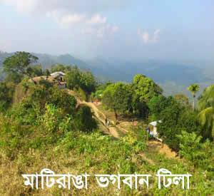

মাটিরাঙ্গা উপজেলার ইউনিয়ন পরিষদ তাইন্দং সীমান্তে অবস্থিত ভগবান টিলা।

মাটরাঙ্গা উপজেলার তাইন্দং সীমান্তে অবস্থিত ভগবান টিলা। মাটিরাঙ্গা উপজেলা থেকে এর দুরত্ব আনুমানিক ৪৫ কিলোমিটার।
ঘন সবুজের ভেতর আঁকাবাঁকা রাস্তা দিয়ে যতই এগোতে থাকবেন পাহাড়ের অপরূপ সৌন্দর্য়ে আপনি ততটাই বিস্মিত হবেন। এ যেন বিধাতার হাতে গড়া পর্বত রূপসী। সমুদ্র সমতল থেকে প্রায় এক হাজার ৬শ’ ফুট উচুতে অবস্থিত এ টিলা নিয়ে জনশ্রুতি আছে, এত উচু টিলায় দাড়িয়ে ডাক দিলে স্বয়ং স্রষ্টাও শুনতে পাবেন। তাই আগেকার লোকজন এর নাম দিয়েছেন ভগবান টিলা।